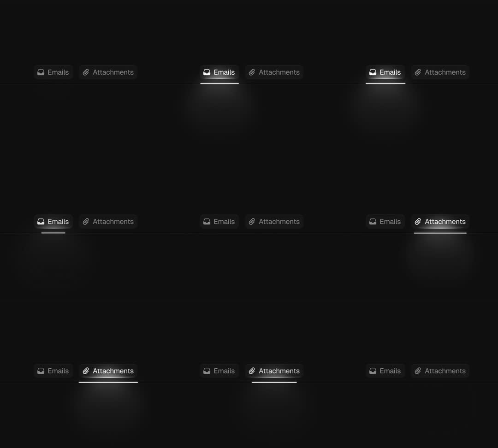

Tabs animation: a minimal dark tab bar ('Emails' / 'Attachments' with icons) where the active tab becomes a little stage light - it lights up from below: a soft radial glow pools under the tab and a subtle cone of light rises beneath the text, plus a crisp white underline; switching tabs sweeps the light across.
Media
Frame-by-frame

0-25%
'Emails' active: white text + 2px underline, glow blooming beneath the tab against the black wall; 'Attachments' dim grey.
25-50%
Mid-switch: underline + glow travel from Emails to Attachments; glow smears during transit (motion blur feel).
50-100%
'Attachments' active with its own light pool; states alternate; inactive tab sits in darkness (white/35).
Build prompt
Rebuild this interaction 1:1: a tabs animation - minimal dark tab bar ("Emails" / "Attachments" with icons) where the active tab becomes a little stage light: it lights up from below - a soft radial glow pools under the tab, a subtle cone of light rises beneath the text, and a crisp white underline; switching tabs sweeps the light across.
## Integration
Integration: stack-agnostic spec - springs given as stiffness/damping, timed motions as duration + curve, canvas/shader notes are perf guidance only; map every value to your framework and animation library of choice.
## Scene
Black canvas. Tab bar: "Emails" and "Attachments", each icon + label. Active: white text, 2px white underline, glow pooling beneath. Inactive: white/35, sitting in darkness.
## Motion spec
Pattern: shared-indicator tab switch with light physics.
- Switch: the underline travels to the new tab (translateX + width morph, 450ms, spring-ish ease-out with a slight overshoot); the glow pool travels WITH it, smearing during transit (scaleX stretch + opacity dip, motion-blur feel); the light cone re-forms under the new tab.
- Inactive tab dims to white/35 (150ms).
## Calibration
- 450ms with a small overshoot on the underline - the light should feel swung, not teleported.
- The smear during transit is the signature: glow stretches horizontally mid-flight, then re-pools.
- The glow is soft and low (white/15 radial) - it pools on an invisible floor, never a spotlight beam.
## Reduced motion
Underline jumps with a 150ms fade; glow crossfades without smear.
## Don't miss
- One shared underline + one shared glow element traveling - not per-tab fades.
- Inactive tabs sit in real darkness (35%); mid-grey ruins the stage-light read.
- Icon and label brighten together with the glow's arrival, slightly after the underline lands (30ms lag).